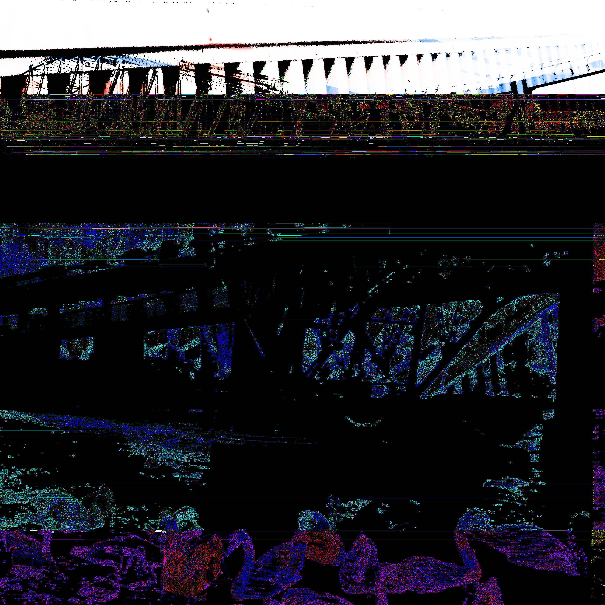

Corrupting is a process, where a product is changed from its original state to one which is now different from the original product. With us living in a digital world nearly all media has been created digitally or have been digitized and can be represented by a set of data. Corruptions can take place digitally, with 'Data Corruption', this can happen accidently but we can facilitate corruption through editing data.
Below is an example of corruption of a digital image. The original image is from my photography in 2015, after changing the images internal data this is the product.
It's fun!
In all serious though, there are various reason why people corrupt media. Some find that they are interested in the process; finding corrupting to be a new method for creation. Some find the end results aesthetically pleasing. And depending on the source material or methods some may find humour or horror in the end creation.
People have corrupted almost all forms of media; images, videos, music, and even games!
Some find corrupted images to be aesthetically pleasing, there is a growing scene of 'Glitch Art' which consists of art which is from a corrupted source but some artists just try to emulate the aesthetic of corrupted images.
In addition to images, there is also communities for corrupting videos. One such method for corrupting videos is termed 'Datamoshing'. This method essentially boils down to combining multiple videos and manipulating the data for unique effects. This effect has had some prominence in music videos in the past four to five years.
The final example of media that is corrupted will mention is video games. Corrupted video games can yield interesting results as it is a form of media that one interacts with. Interacting with corrupted media provides a new experience to media changing the experience for the player. They can also be very funny!